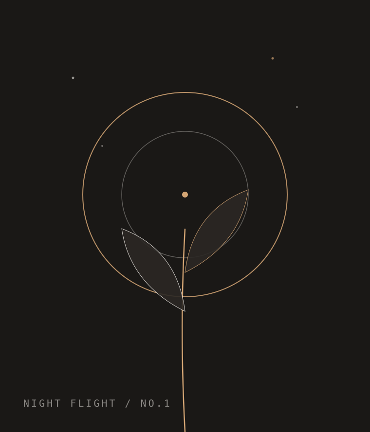
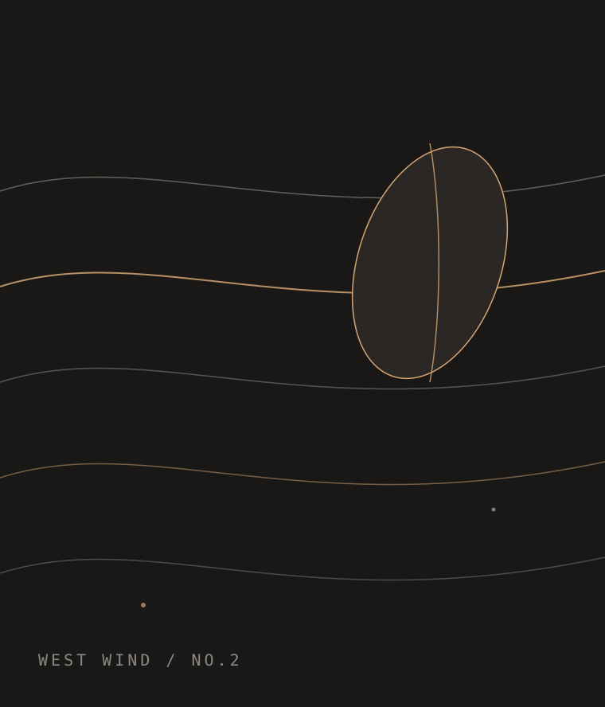
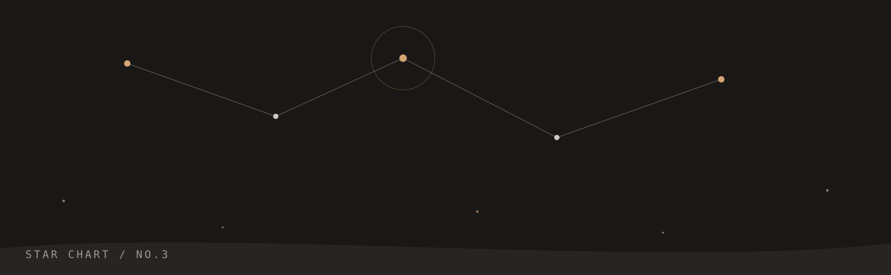

CONTEMPORARY ART EXHIBITION · GUIDE
一场关于暗处生长的当代艺术展 · 展览导览
2026.10.01 — 2026.12.15 · 西岸美术馆 · 地下展厅
EPIGRAPH
「我们把灯一盏一盏熄灭，
只为看清植物在夜里真正的样子。」
—— 摘自策展人手记

HALL ONE · NIGHT FLIGHT
展厅只留一盏低空射灯。观众沿地面铜线行走，像沿着一条夜间航线，接近那些只在黑暗中舒展的叶片。
核心作品：《暗处之叶》 · 铜、感光涂料、活体植物
ARTISTS
HALL TWO · WEST WIND
一整面墙被让给风。气流装置以真实的夜间风向数据驱动，铜线在半空中持续颤动，像一封尚未抵达的信。
核心作品：《西风的形状》 · 铜线、气流装置、实时风数据

NIGHT ROUTE
入夜进场，先在全暗的门厅停留三分钟，让眼睛适应。
沿铜线进入第一展区，低光中辨认叶片的轮廓。
穿过风墙，在声音作品前停留，听完一整次蒸腾。
抵达星图厅，抬头看根系连成的星座，然后离场。

HALL THREE · STAR CHART
最后一间展厅没有展品，只有头顶一片由植物根系转译的星座。策展人说：地下的方向，就是天上的方向。
CLOSING
开放时间 周二至周日 19:00 — 22:00 · 全暗展厅，请轻声慢行
西岸美术馆 · 地下展厅 · 预约导览请至前台登记